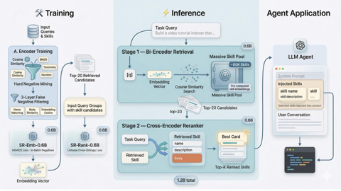

Skill routing · Steroids vs the trained field
Zero parameters.
Measured against 16B pipelines.
Steroids matches your question to the right skill. No model. CPU only. About 40 ms per query. Competitors train neural retrievers and serve them on GPUs. Orange bars are Steroids. Gray bars are everyone else.
Our benchmark
every eval set × metric × index generation we've published · P@1 = exact golden skill at rank 1Steroids · every published score (higher is better)
sources: README results + history tables · run anytime: tests/benchmark.py --golden
Every bar is ours. Four eval sets across three index generations. Scores moved 0.577, then 0.799, now 0.993 as misses got fixed. The miss log is queryable.
Their benchmark
SkillRouter's eval · 75 expert-verified queries · ~80K-skill pool · Hit@1 · ours is the hatched orange barPublished Hit@1: the full field and the collapse rows
Source: SkillRouter v4 Tables 2–3 + §3 body-text ablation · arxiv.org/html/2603.22455v4
Gray dashes: without full skill text, scores fall to .253, .240 and .000 at 80K skills. The field has to index full bodies. Orange dash: we ran their exact pool and queries (benchmarks/vs-skillrouter/run.py) and scored 0.521 (38/73) against their 0.740, above the BM25 floor of 0.314. Their paper says metadata-only routing fits smaller catalogs. Ours has 1,268 skills.
Head to head
running cost per system, in local model size · ours is zeroLocal parameters per system (billions)
dashed = API-only, size n/a · zero bars = no model at all
The gold sliver is zero local parameters. Steroids installs as a hook. Nothing to serve. Measured latency: 40 ms per query on CPU here. 496 ms for SkillRouter on GPU. About 2.9 s for the 16B pipeline.
Steroids params
0
stdlib · optional 30 MB ONNX
SkillRouter 1.2B
1.2B
+ 37,979 training pairs
16B pipeline
16B
strongest base
Steroids per query
~40 ms
CPU only, measured
SkillRouter p50
496 ms
GPU serving
16B pipeline
~2.9 s
GPU · strongest base
Live competitor intel
pulled from primary sources on 2026-09-26 · no shared axis, so tiles not barsSteroids index
1,267
skills · active daily
SkillRouter
260★
26 forks · pushed 2026-06-25
SkillsBench
v1.1
87 tasks · released 2026-06-16
SkillRet v3
63,259
train samples · Sep 2026
SWE-Skills-Bench
565
SWE tasks · Mar 2026
SkillGenBench
May 2026
skill-generation pipelines
Sources: GitHub API (SkillRouter repo), skillsbench.ai/blogs, arXiv abstracts (2605.05726, 2603.15401, 2605.18693).
Architecture
the real archify HTML, embedded · pan, zoom and theme-switch insideCompetitor artifacts
their official images · ours is the live diagram above
Full data
every number we track · sources per row · Steroids rows tinted| System | Benchmark | Metric | Score | Params | Runs on | Source |
|---|---|---|---|---|---|---|
| Steroids (live GOLDEN) | Ours · C | P@1 / P@3 | 0.993 / 1.000 | 0 (stdlib) | CPU · ~40 ms | README 2026-09-25 |
| Steroids (second315) | Ours · C | P@1 / P@3 | 0.898 / 0.959 | 0 (stdlib) | CPU | tests/blind_eval_second.py |
| Steroids (their 79K pool) | Theirs · A | Hit@1 | 0.521 | 0 (stdlib) | CPU · ~6 s median* | benchmarks/vs-skillrouter 2026-09-26 |
| Steroids (frozen golden) | Ours · C | P@1 / P@3 | 0.799 / 0.960 | 0 (stdlib) | CPU · ~40 ms | tests/benchmark.py --golden |
| Steroids (vs-hf-graft) | Ours · C | P@1 | 0.95 | 0 (stdlib) | CPU · p95 239 ms | benchmarks/vs-hf-graft |
| Steroids (366-idx, historical) | Ours · C | P@1 / P@3 | 0.933 / 0.993 | 0 (stdlib) | CPU | README history 2026-09-20 |
| Steroids (old build, 1265 idx) | Ours · C | P@1 | 0.577 | 0 (stdlib) | CPU | README history 2026-09-23 |
| SkillRouter 8B | Theirs · A | Hit@1 | .760 | 8B | GPU | SkillRouter T3 |
| SkillRouter 1.2B | Theirs · A | Hit@1 | .740 | 1.2B | GPU · 496 ms | SkillRouter T3 |
| 16B base pipeline | Theirs · A | Hit@1 | .680 | 16B | GPU · ~2.9 s | SkillRouter T3 |
| GPT-4o-mini judge | Theirs · A | Hit@1 | .673 | API | API | SkillRouter §5.2 |
| Qwen3-Emb-8B | Theirs · A | Hit@1 | .640 | 8B | GPU | SkillRouter T2 |
| OpenAI emb-3-large | Theirs · A | Hit@1 | .620 | API | API | SkillRouter T2 |
| BGE-Large-v1.5 | Theirs · A | Hit@1 | .600 | 335M | CPU/GPU | SkillRouter T2 |
| Gemini embedding-001 | Theirs · A | Hit@1 | .587 | API | API | SkillRouter T2 |
| Qwen3-Emb-0.6B | Theirs · A | Hit@1 | .560 | 0.6B | GPU | SkillRouter T2 |
| BM25 (full text) | Theirs · A | Hit@1 | .314 | none | CPU | SkillRouter T2 |
| Qwen3-Emb-8B (metadata-only) | Theirs · A | Hit@1 | .253 | 8B | GPU | SkillRouter §3 |
| 16B pipeline (metadata-only) | Theirs · A | Hit@1 | .240 | 16B | GPU | SkillRouter §3 |
| BM25 (metadata-only) | Theirs · A | Hit@1 | .000 | none | CPU | SkillRouter §3 |
| SkillRet fine-tuned | Theirs · B | NDCG@10 | +12.9–16.2 pts | 0.6B/8B | GPU | SkillRet v3 |
| SkillsBench (skills on/off) | end-to-end | pass-rate lift | +16.2 pp avg | none | agent harness | skillsbench.ai |
| SkillRouter downstream | end-to-end | task success | 27.56% (oracle 32.67%) | 1.2B | Claude Code · 75 tasks | SkillRouter §5.5 |
Reading note: their benchmark and ours use different queries, pools and metrics. Scores never share an axis except the 79K run. Only params, latency and cost compare directly.
Read this honestly
SkillRouter .740 vs Steroids 0.799. Different benchmarks, different metrics. No cross comparison claimed. Same exam, both sides: 1.2B params, GPU, 496 ms. 0 params, CPU, about 40 ms.
Settled 2026-09-26 on their pool: us 0.521, them 0.740. The gap is full skill bodies. Their ablation shows metadata-only input loses 31 to 44 points at 80K scale. We read metadata only. Their words: "metadata-only routing may be more competitive in smaller catalogs." Ours is that smaller catalog. 1,268 skills. P@1 0.993.
*79K-pool median is per-query routing cost at 79K scale on CPU, index built once. Steroids runs about 40 ms at 1.2K skills and 6 s at 79K. Per-query cost grows with the pool. Their GPU serving stays flat at 496 ms.